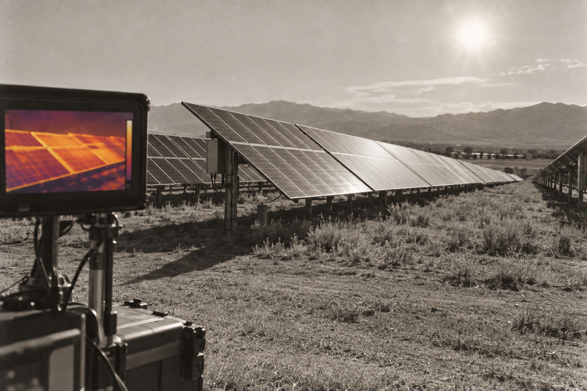

Dataset + acquisition workflow
Helped collect and organize the close-range thermal image dataset.
ORIGIN STORY // 05
research index ↙FIRST RESEARCH PROJECT · IEEE VCIP 2024
Sophomore me, several Jupyter notebooks, and one very sunny computer-vision problem.
This was the project that taught me what research actually feels like: collecting imperfect data, discovering that preprocessing can completely change an experiment, benchmarking methods carefully, and eventually turning the work into my first first-author paper.

research brief // 05
the first question
Classical feature detectors are usually benchmarked on ordinary visible-light imagery. Thermal images behave differently: temperature variation, shadows, heat, and surface characteristics change what algorithms can reliably detect.
We wanted to know which methods remained robust when the imagery came from close-range thermal inspection rather than a standard vision benchmark.
from field to benchmark
Collect close-range thermal solar-panel imagery across distances, angles, and times of day.
Normalize thermal intensities and account for shadows and extreme heat regions.
Apply controlled rotation and motion blur.
Compare multiple thermal colormaps.
Evaluate detectors and descriptors under each condition.
contribution ledger
Helped collect and organize the close-range thermal image dataset.
Implemented image normalization, shadow handling, transformations, and colormap variants.
Compared classical detectors and descriptors systematically using repeatability and matching performance.
Studied robustness across rotation, blur, time-of-day, and visual representation.
Led the work through analysis, writing, and first-author publication.
published result
The bigger lesson was that performance depended not only on the algorithm, but on how thermal information was normalized and visually represented before the algorithm ever saw it.
baby researcher lore
I joined Eduardo Feo-Flushing’s group as a sophomore with considerably more curiosity than research experience.
He gave me room to learn computer vision by actually doing it: notebooks first, then experiments, then the uncomfortable realization that every design choice needed a reason.
The summer project eventually became a multi-year study and my first first-author conference paper.
mentor verdict: yes, the annoying child may stay
trajectory
This project taught me to distrust the idea that data simply “arrives.”
Images are captured under conditions, transformed through preprocessing, and made legible through design choices before an algorithm ever evaluates them. That lesson shows up repeatedly in my later work on behavioral measurement and visualization.
methods
thermal imaging · OpenCV · feature detection · feature description · image preprocessing · controlled perturbations · empirical benchmarking
paper
IEEE VCIP 2024 · First author